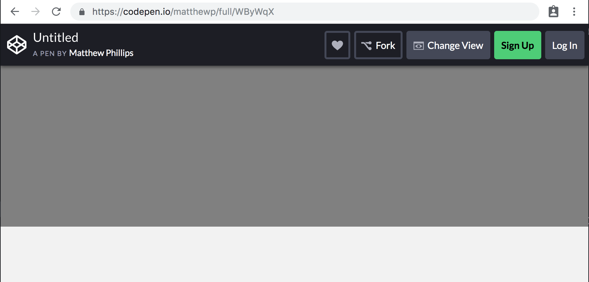

Writing a template page
Learn how <template> can be used to create reusable DOM that can be cloned and used within your components.
Create a new CodePen for this exercise. This new CodePen can be used for the rest of the exercises in this training.
Overview
In this part, we will:
- Create a template that includes the HTML we need for our Google map component.
Problem
The Google map API needs an element to mount the map into. We want our map to be certain dimensions. Create a 250px tall container for the map using <template>. In the end it should look like:

How to Solve This Problem
- Create a
templateelement that contains adivthat will act as the container for the Google Map, as well as the styles. - Add the global styles to the CSS tab in CodePen.
- In the JS tab write the JavaScript necessary to clone and activate the template, appending it to the
body.
Technical Requirements
The following CSS will give the container the dimensions we want.
.gmap {
width: 100%;
height: 250px;
background-color: grey;
}
Use the class name .gmap for the container element.
Add the following as global styles to the page:
html,
body {
height: 100%;
}
body {
font-family: "Catamaran", sans-serif;
background-color: #f2f2f2;
display: flex;
flex-direction: column;
margin: 0;
}
What You Need to Know
To solve this, you will need to know:
- What the
<template>element is. - How to create a new instance of a template.
The template element
A <template> is an element whose children are inert. This means that the browser doesn't render them, like it will for nodes outside of templates. Images will not load, scripts will not execute, styles are not applied.
<template>
<h1>Cats</h1>
<!-- This will not load yet -->
<img src="/images/purfect.png" />
</template>
You can't grab content inside of a template using the normal DOM APIs like document.querySelector or document.getElementById. They only exist within the template's content fragment.
let h1 = document.querySelector('h1');
console.log(h1); // null
let template = document.querySelector('template');
h1 = template.content.querySelector('h1');
console.log(h1); // <h1>Cats</h1>
Creating instances of a template
Templates can be cloned using template.content.cloneNode(true) or document.importNode(template.content, true). The latter is useful if you ever need to clone a template contained within another document, but otherwise they are equivalent.
Cloning a template returns a DocumentFragment, a collection of DOM nodes that can be quickly inserted into an element.
let template = document.querySelector('template');
let fragment = document.importNode(template.content, true);
document.body.append(fragment);
// Our cat picture is now loading!
Solution
✏️ Start by creating the template. Give it an id so that we can more easily query it to use it in our component.
<style>
html,
body {
height: 100%;
}
body {
font-family: "Catamaran", sans-serif;
background-color: #f2f2f2;
display: flex;
flex-direction: column;
margin: 0;
}
</style>
<template id="gmap-template">
<style>
.gmap {
width: 100%;
height: 250px;
background-color: grey;
}
</style>
<div class="gmap"></div>
</template>
<script type="module">
const template = document.querySelector('#gmap-template');
let fragment = document.importNode(template.content, true);
document.body.append(fragment);
</script>
Running this code should show you a 250px tall grey square.